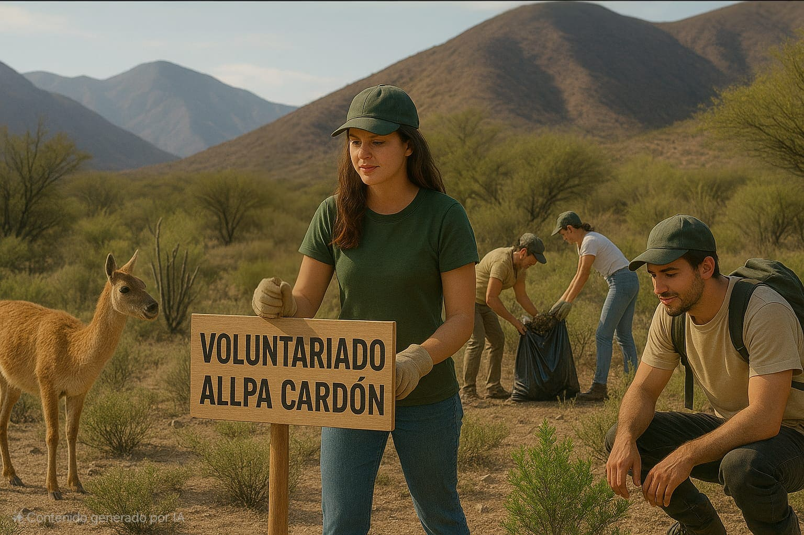

Sé parte de nuestro voluntariado
Ser parte de nuestra ONG como voluntario/a significa comprometerse con la defensa de nuestro territorio, el agua y la vida. Es alzar la voz junto a comunidades que luchan por un futuro sustentable.
Es un espacio donde se construyen lazos solidarios, se aprende colectivamente y se fortalece el compromiso con el medio ambiente y nuestros derechos.
¡Nuestra labor y compromiso humanitario es transformar y mejorar realidades catamarqueñas!
